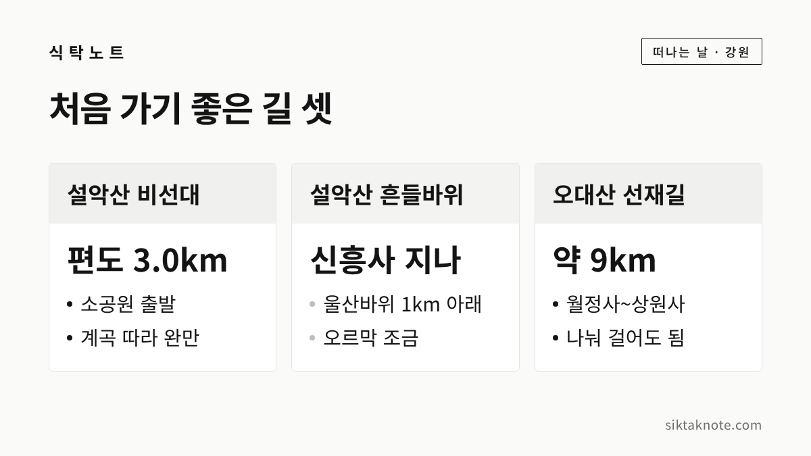
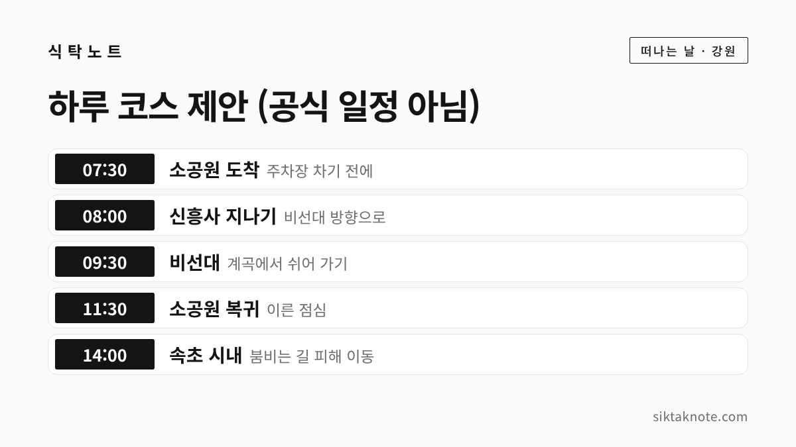

설악산 오대산 단풍 시기 2026 — 절정 예상일, 초보자 코스, 주차와 붐비는 날 피하는 법

3줄 요약
- 설악산은 기상청 발표로 9월 28일 첫 단풍이 들었고, 평년과 같은 날이었다고 합니다.
- 절정 예상일은 산림청이 설악산 10월 20일, 웨더아이가 10월 25일로 내놓아서 10월 셋째·넷째 주가 고비가 될 것 같아요.
- 처음이라면 설악산 비선대, 흔들바위, 오대산 선재길처럼 걷기 쉬운 길을 추천합니다.
행사 정보
- 설악산 첫 단풍
- 2026년 9월 28일 (기상청 발표, 언론 보도). 평년과 같고 지난해(10월 2일)보다 4일 빠름
- 설악산 절정 예상
- 10월 20일 (산림청 '2026년 한반도 단풍절정 예측지도', 언론 보도) / 10월 25일 (웨더아이 9월 4일 발표)
- 오대산 절정 예상
- 설악산과 함께 10월 16~25일 무렵 (웨더아이)
- 설악산 평년 절정
- 10월 17일 (기상청 자료를 인용한 보도)
- 탐방 예약제
- 흘림골 10월 1일~11월 30일, 하루 5,000명 (언론 보도). 비선대·흔들바위·선재길은 예약제 안내를 찾지 못했어요
- 입장료
- 설악산 소공원 쪽은 현재 무료로 보도됨. 주차료는 따로 있어요
2026.10.06 확인 기준. 단풍 예상일은 날씨에 따라 달라집니다. 탐방로 통제와 예약 여부는 출발 전에 국립공원공단에서 꼭 확인하세요.

올해 설악산 단풍은 9월 28일에 시작됐어요
설악산은 우리나라에서 단풍이 가장 먼저 드는 산인데요. 언론 보도에 따르면 기상청은 9월 28일 설악산에 첫 단풍이 들었다고 밝혔습니다. 평년과 같은 날이고, 지난해 10월 2일보다는 나흘 빨랐다고 해요.
기상청과 웨더아이가 쓰는 기준은 이렇습니다. 산 전체로 봐서 정상부터 20% 정도 물들면 '첫 단풍', 80% 정도 물들면 '절정'이라고 부릅니다. 첫 단풍 소식이 들렸다고 바로 온 산이 붉은 건 아니라는 뜻이죠. 단풍은 산꼭대기에서 시작해 조금씩 아래로 내려옵니다.

절정은 언제쯤일까
올해 절정 예상일은 발표한 곳마다 조금씩 다른데요. 그래서 두 곳 발표를 함께 적어 둡니다.
| 발표 기관 | 발표일 | 설악산 절정 | 오대산 절정 |
|---|---|---|---|
| 산림청 (한반도 단풍절정 예측지도) | 9월 22일 | 10월 20일 | 보도에서 확인 못 함 |
| 웨더아이 (민간 기상정보 업체) | 9월 4일 | 10월 25일 | 10월 16~25일 무렵 |
산림청 발표는 보도로 확인한 내용입니다. 보도에 따르면 산림청은 2009년부터 공립수목원과 함께 쌓아 온 식물 관찰 자료와 국립산림과학원의 산악기상 자료로 예측지도를 만든다고 해요. 웨더아이는 9월과 10월 기온이 평년보다 높을 것으로 보고, 올해 단풍이 평년보다 늦을 거라고 내다봤습니다.
참고로 기상청 자료를 인용한 보도에서는 설악산 절정이 평년 10월 17일, 지난해 10월 24일이었다고 합니다. 이 숫자들을 함께 놓고 보면 10월 셋째 주에서 넷째 주 사이가 가장 고울 것 같습니다. 다만 예상은 예상일 뿐이라, 떠나기 며칠 전 단풍 소식을 한 번 더 확인하시는 게 좋겠습니다.

초보자도 걷기 쉬운 설악산 길
비선대는 설악산 소공원에서 천불동 계곡을 따라 3.0km 들어가는 길이에요. 계곡을 끼고 걷는 길이라 경사가 심하지 않은 편입니다. 여행 매체들은 왕복 6km에 2시간 30분 안팎으로 소개하는데요. 쉬엄쉬엄 걷는다면 시간을 더 넉넉히 잡으시는 게 좋습니다. 비선대에서 금강굴까지는 600m가 더 이어지지만, 그 구간은 계단이 가팔라서 처음이라면 비선대에서 돌아와도 충분합니다.
흔들바위는 소공원에서 신흥사를 지나 계조암 쪽으로 올라가면 나옵니다. 여행 기사들에 따르면 소공원에서 울산바위까지가 편도 약 3.8km이고, 흔들바위는 울산바위보다 1km쯤 아래에 있어요. 울산바위 정상 쪽은 계단이 많고 힘든 구간이라, 무릎이 걱정되는 분은 흔들바위까지만 다녀오셔도 좋겠습니다.
국립공원공단이 공식으로 밝힌 구간별 소요 시간은 이번에 직접 확인하지 못했어요. 걷는 속도는 사람마다 다르니 해 지는 시간을 생각해 일찍 출발하시는 게 가장 안전합니다.

오대산은 선재길이 좋습니다
오대산의 선재길은 월정사에서 동피골을 지나 상원사까지 오대천 계곡을 따라 이어지는 숲길이에요. 길이는 약 9km로 알려져 있습니다. 한국관광공사 대한민국 구석구석에서는 길이 평탄해 걷기 어렵지 않지만, 끝까지 다 걷기는 만만치 않다고 소개하는데요. 중간중간 다리로 버스 정류장과 이어져 있어서 걷다가 나와도 됩니다. 두 절 사이에 버스가 다니지만 자주 있지는 않다고 하니 시간표를 꼭 미리 보세요.
더 짧게 걷고 싶다면 월정사 전나무숲길이 있습니다. 평창군 관광 안내로는 총 1.9km에 1시간 정도 걸리고, 남녀노소 누구나 걷기 좋은 길이라고 해요.

예약이 필요한 곳, 필요 없는 곳
설악산 남쪽 흘림골은 올해 10월 1일부터 11월 30일까지 탐방 예약제로 운영되고, 하루 5,000명까지 들어갈 수 있다고 보도되었습니다. 흘림골에 가실 분은 국립공원 예약시스템에서 먼저 예약하셔야 해요.
비선대, 흔들바위, 선재길은 이번에 예약제 안내를 찾지 못했습니다. 그래도 단풍철에는 일부 탐방로가 통제되거나 바뀌는 일이 있으니, 국립공원공단 누리집 공지를 출발 전에 확인하시는 게 좋겠습니다.

주차와 붐비는 주말 피하는 요령
설악산 소공원 쪽 입장료는 현재 받지 않는다고 보도되었지만, 주차료는 따로 내야 합니다. 요금은 보도마다 달라서 여기서는 적지 않을게요.
단풍철 주말이면 설악동으로 들어가는 길이 아침부터 막히는데요. 그래서 몇 가지 요령을 적어 둡니다.
- 가능하면 평일에 가세요. 주말이라면 해 뜨고 얼마 안 된 이른 아침에 도착하는 게 좋습니다.
- 절정 예상일 바로 그 주말은 가장 붐빕니다. 한 주 앞당기면 덜 붐비고, 위쪽은 이미 곱게 물들어 있을 수 있어요.
- 속초 시내에 차를 두고 시내버스로 소공원까지 가는 방법도 있습니다. 노선과 시간은 속초시 버스 정보로 확인하세요.
- 오대산은 월정사 주차장에 차를 두고 선재길을 걷는 분이 많습니다. 돌아오는 버스 시간을 먼저 확인해 두면 마음이 편해요.
이렇게 하루를 짜 봤어요

카드는 제안일 뿐 공식 일정이 아닙니다. 아침 일찍 소공원에 도착해 비선대까지 다녀오고, 점심 무렵 산을 빠져나오는 순서예요. 오후에 몰리는 차를 피할 수 있거든요. 오대산까지 함께 보고 싶다면 하루를 따로 잡으시는 게 좋겠습니다. 두 산 사이 이동 시간은 지도 앱으로 꼭 재 보세요.
떠나기 전에 챙길 것
가을 산은 아래와 꼭대기 온도 차이가 큰데요. 얇은 겉옷을 하나 더 챙기시는 게 좋겠습니다. 해도 빨리 지니 오후 늦게 산에 들어가는 건 피하세요. 길이 쉬워도 낙엽이 쌓이면 미끄러우니 바닥이 단단한 신발이 좋습니다.
단풍 구경 가는 길에 들를 만한 행사는 10월 강원도 축제 일정에 모아 두었어요. 설악산 다음으로 물드는 원주 쪽이 궁금하다면 치악산 꿩의 보은 전설도 함께 읽어 보세요.
이 글은 2026년 10월 6일 기준입니다.